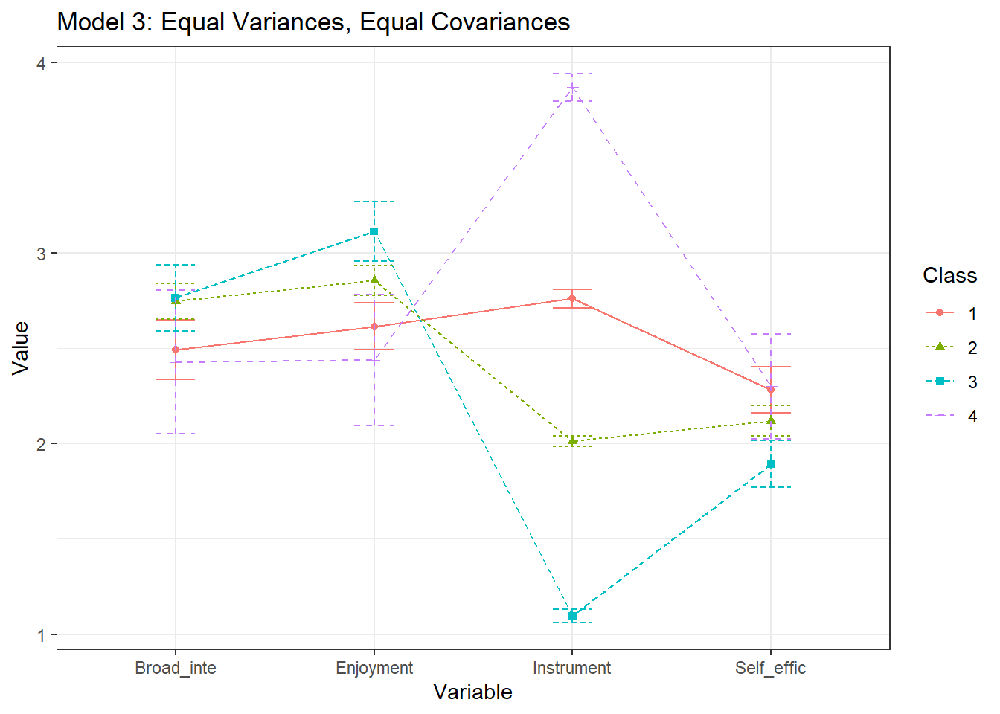
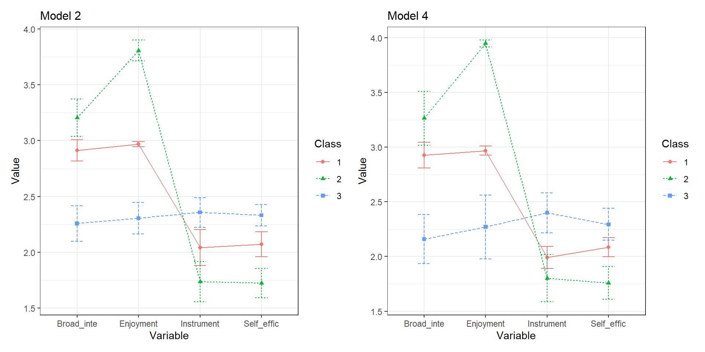

8 Item Mean Plots
Example: PISA Student Data
- The first example closely follows the vignette used to demonstrate the tidyLPA package (Rosenberg, 2019).
- This model utilizes the
PISAdata collected in the U.S. in 2015. To learn more about this data see here. - To access the 2015 US
PISAdata & documentation in R use the following code:
Variables:
broad_interest-
composite measure of students’ self reported broad interest
enjoyment-
composite measure of students’ self reported enjoyment
instrumental_mot-
composite measure of students’ self reported instrumental motivation
self_efficacy-
composite measure of students’ self reported self efficacy
#devtools::install_github("jrosen48/pisaUSA15")
#library(pisaUSA15)8.1 Load packages
library(naniar)
library(tidyverse)
library(haven)
library(glue)
library(MplusAutomation)
library(here)
library(janitor)
library(gt)
library(tidyLPA)
library(pisaUSA15)
library(cowplot)
library(filesstrings)
library(patchwork)
library(RcppAlgos)8.2 Prepare Data
pisa <- pisaUSA15[1:500,] %>%
dplyr::select(broad_interest, enjoyment, instrumental_mot, self_efficacy)8.3 Descriptive Statistics
Quick Summary
summary(pisa)
#> broad_interest enjoyment instrumental_mot
#> Min. :1.000 Min. :1.00 Min. :1.000
#> 1st Qu.:2.200 1st Qu.:2.40 1st Qu.:1.750
#> Median :2.800 Median :3.00 Median :2.000
#> Mean :2.666 Mean :2.82 Mean :2.129
#> 3rd Qu.:3.200 3rd Qu.:3.00 3rd Qu.:2.500
#> Max. :5.000 Max. :4.00 Max. :4.000
#> NA's :23 NA's :14 NA's :21
#> self_efficacy
#> Min. :1.000
#> 1st Qu.:1.750
#> Median :2.000
#> Mean :2.125
#> 3rd Qu.:2.500
#> Max. :4.000
#> NA's :23Mean Table
ds <- pisa %>%
pivot_longer(broad_interest:self_efficacy, names_to = "variable") %>%
group_by(variable) %>%
summarise(mean = mean(value, na.rm = TRUE),
sd = sd(value, na.rm = TRUE))
ds %>%
gt () %>%
tab_header(title = md("**Descriptive Summary**")) %>%
cols_label(
variable = "Variable",
mean = md("M"),
sd = md("SD")
) %>%
fmt_number(c(2:3),
decimals = 2) %>%
cols_align(
align = "center",
columns = mean
) | Descriptive Summary | ||
| Variable | M | SD |
|---|---|---|
| broad_interest | 2.67 | 0.77 |
| enjoyment | 2.82 | 0.72 |
| instrumental_mot | 2.13 | 0.75 |
| self_efficacy | 2.12 | 0.64 |
Histograms
data_long <- pisa %>%
pivot_longer(broad_interest:self_efficacy, names_to = "variable")
ggplot(data_long, aes(x = value)) +
geom_histogram(binwidth = .3, fill = "#69b3a2", color = "black") +
facet_wrap(~ variable, scales = "free_x") +
labs(title = "Histograms of Variables", x = "Value", y = "Frequency") +
theme_cowplot()
8.4 Visualization
8.4.1 Latent Profile Plot
source(here("functions", "plot_lpa.R"))
# Read in models
output_enum <- readModels(here("lpa", "tidyLPA"), quiet = TRUE)
plot_lpa(model_name = output_enum$model_3_class_4.out)
Save figure
ggsave(here("figures", "model3_profile4.png"), dpi = "retina", bg = "white", height=5, width=8, units="in")8.4.2 Plots Means and Variances
plotMixtures(output_enum$model_3_class_4.out, ci = 0.95, bw = FALSE) +
labs(title = "Model 3: Equal Variances, Equal Covariances")
8.4.3 Plot comparison
We can also plot the comparisons and look at the error bars.
NOTE: The plotMixtures() function is used for plotting LPA models only (i.e., means & variances)
a <- plotMixtures(output_enum$model_2_class_3.out,
ci = 0.95, bw = FALSE)
b <- plotMixtures(output_enum$model_4_class_3.out,
ci = 0.95, bw = FALSE)
a + labs(title = "Model 2") +
theme(plot.title = element_text(size = 12)) +
b + labs(title = "Model 4") +
theme(plot.title = element_text(size = 12))